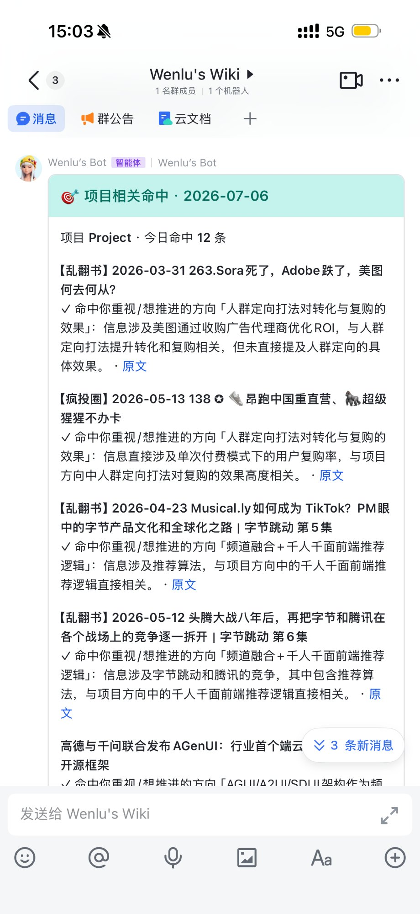
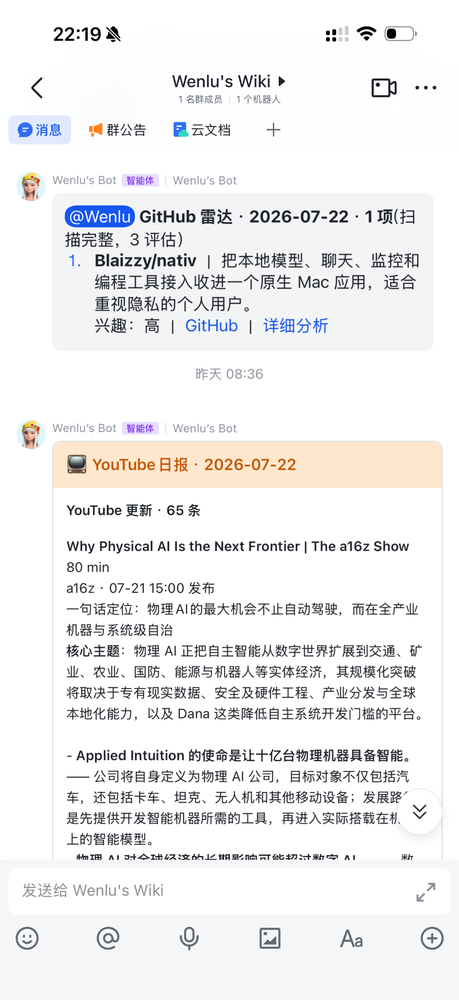
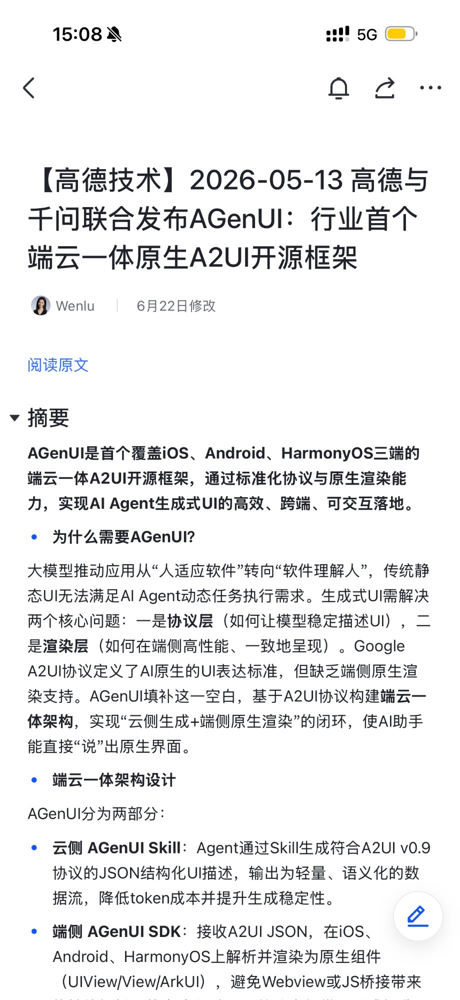
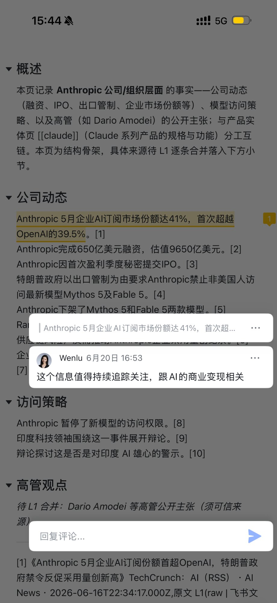
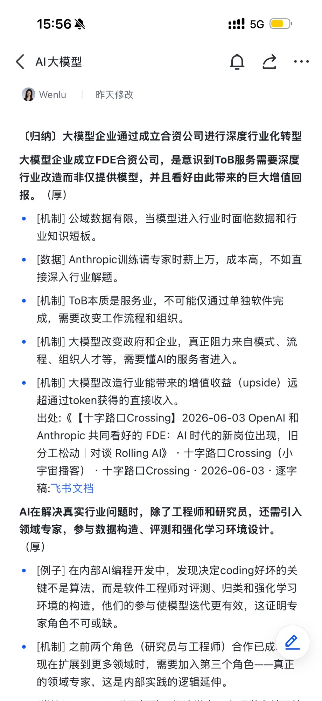

Project_01
AI Native 个人自动化知识系统
每日自动运行
01痛点与解法
信息分散,收藏即「吃灰」→系统自动采集、清洗、归档
长内容太多,难以筛选→智能摘要 + 相关性匹配,优先推送高价值内容
整理全靠手工,难以坚持→AI 自动摘要、分类、关联、更新
读完的判断无法沉淀→反馈与决策自动写回,成为可复用的认知资产
02产品定位
AI 负责收集与维护，人负责阅读与高质量判断；让每一次阅读、反馈和提问，都沉淀为持续增值的个人知识资产
多模态自动采集
5 Agent协同
人与AI协作
飞书生态零切换
03用户路径
路径一被动发现系统找“我”，系统持续学习“我”的兴趣与立场
每日摘要推送
关注内容汇总
项目相关命中
兴趣相关匹配



查看原文一键跳转自动生成的逐字稿文档

轻量反馈“我”点赞 / 点踩 / 评论

路径二主动探索“我”问系统，系统自我优化后续推荐与知识结构
向 Agent 提问@Bot 基于个人知识库回答,逐条带出处

反馈自动回写“人”的判断回流知识库，Agent 持续编译升级

04核心亮点
人机各司其职,认知资产持续复利
AI 执行所有机械劳动:采集、转写、清洗、摘要、索引、一致性维护;人只做高价值判断:关注、评价、质疑、决策。每次交互都反哺兴趣模型与回答质量——使用越久,资产越完整,回答越懂你。
多workflow + 多 Agent 协同
每日多模态采集 → 多 LLM 处理 → Git 版本存储 → 飞书同步,全自动流转;五个 Agent 分工协作,保障知识库持续进化而不失控。
Librarian agent编译Matcher agent匹配Researcher agent问答Harvester agent回写Lint agent测试
飞书内闭环,零切换成本
摘要推送、查看原文、文档维护、反馈回流、AI 问答,全部在飞书内完成——飞书既是入口,也是交互界面;后台自动化持续运行。